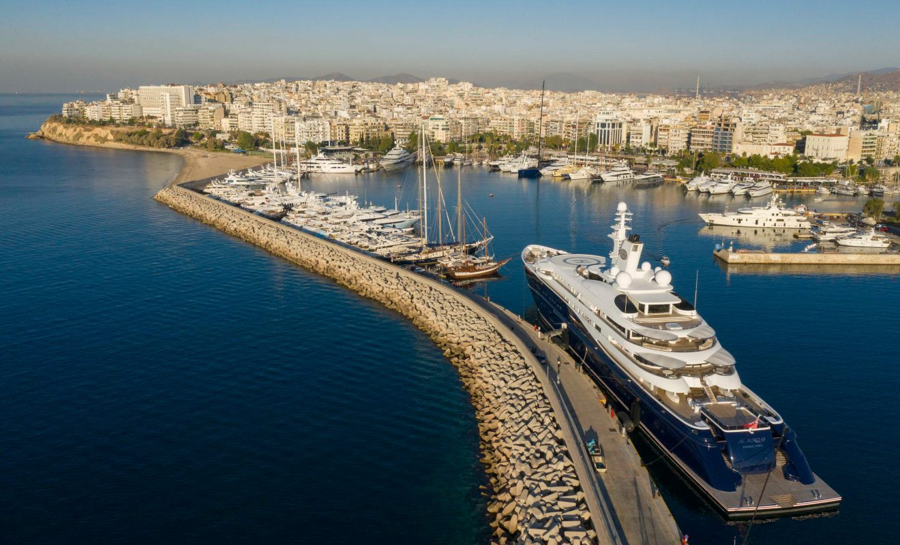
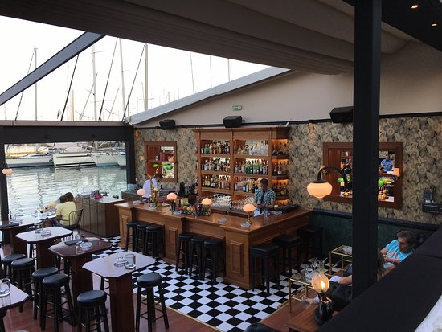

<!DOCTYPE html>
<html lang="el-GR" lang="en">
   <head>
      <!-- basic -->
      <meta charset="utf-8">
      <meta http-equiv="X-UA-Compatible" content="IE=edge">
      <!-- mobile metas -->
      <meta name="viewport" content="width=device-width, initial-scale=1">
      <meta name="viewport" content="initial-scale=1, maximum-scale=1">
      <!-- site metas -->
      <title>Project Port | Map</title>
      <meta name="keywords" content="HTML, CSS, JavaScript">
      <meta name="description" content="Greece | Map">
      <meta name="author" content="Albion Bregu">
      <!-- style css -->
      <link rel="stylesheet" href="assets/css/stylemap.css">
      <link rel="stylesheet" href="https://unpkg.com/leaflet@1.7.1/dist/leaflet.css" integrity="sha512-xodZBNTC5n17Xt2atTPuE1HxjVMSvLVW9ocqUKLsCC5CXdbqCmblAshOMAS6/keqq/sMZMZ19scR4PsZChSR7A==" crossorigin=""/>
      <script src="https://unpkg.com/leaflet@1.7.1/dist/leaflet.js" integrity="sha512-XQoYMqMTK8LvdxXYG3nZ448hOEQiglfqkJs1NOQV44cWnUrBc8PkAOcXy20w0vlaXaVUearIOBhiXZ5V3ynxwA==" crossorigin=""></script>
      <!-- favicon -->
      <link rel="icon" href="assets/img/Map/favicon.png" type="image"/>
      <!-- fontawesome -->
      <link rel="stylesheet" href="https://cdnjs.cloudflare.com/ajax/libs/font-awesome/6.4.0/css/all.min.css" integrity="sha512-iecdLmaskl7CVkqkXNQ/ZH/XLlvWZOJyj7Yy7tcenmpD1ypASozpmT/E0iPtmFIB46ZmdtAc9eNBvH0H/ZpiBw==" crossorigin="anonymous" referrerpolicy="no-referrer" />
      <!-- Leaflet -->
      <link rel="stylesheet" href="https://unpkg.com/leaflet@1.9.3/dist/leaflet.css"
      integrity="sha256-kLaT2GOSpHechhsozzB+flnD+zUyjE2LlfWPgU04xyI="
      crossorigin=""/>
      <link rel="stylesheet" href="https://unpkg.com/leaflet-routing-machine@latest/dist/leaflet-routing-machine.css" />
      <link rel="stylesheet" href="https://unpkg.com/leaflet-control-geocoder/dist/Control.Geocoder.css" />
      <!-- Make sure you put this AFTER Leaflet's CSS -->
      <script src="https://unpkg.com/leaflet@1.9.3/dist/leaflet.js" 
        integrity="sha256-WBkoXOwTeyKclOHuWtc+i2uENFpDZ9YPdf5Hf+D7ewM="
        crossorigin=""></script>
      <script src="https://unpkg.com/leaflet-routing-machine@latest/dist/leaflet-routing-machine.js"></script>
      <script src="https://unpkg.com/leaflet-control-geocoder/dist/Control.Geocoder.js"></script>
      
   </head>
   <!-- body -->
   <body>
      <div id="map"><div id="container"></div>

      <script>

        // Initialize the map and set view to the location in Piraeus, Greece
        var map = L.map('map').setView([37.94489333287662, 23.650415445690015], 15);
    
        // Add OpenStreetMap tile layer to the map
        L.tileLayer('https://{s}.tile.openstreetmap.org/{z}/{x}/{y}.png', {
          attribution: '&copy; <a href="https://www.openstreetmap.org/copyright">OpenStreetMap</a> contributors'
        }).addTo(map);
    
        // Yellow marker icon
        var yellowIcon = L.icon({
          iconUrl: 'https://cdn.rawgit.com/pointhi/leaflet-color-markers/master/img/marker-icon-2x-yellow.png',
          shadowUrl: 'https://cdnjs.cloudflare.com/ajax/libs/leaflet/0.7.7/images/marker-shadow.png',
          iconSize: [25, 41],
          iconAnchor: [12, 41],
          shadowSize: [41, 41],
          shadowAnchor: [12, 41],
          popupAnchor: [1, -34]
        });
    
        // Orange marker icon
        var orangeIcon = L.icon({
          iconUrl: 'https://cdn.rawgit.com/pointhi/leaflet-color-markers/master/img/marker-icon-2x-orange.png',
          shadowUrl: 'https://cdnjs.cloudflare.com/ajax/libs/leaflet/0.7.7/images/marker-shadow.png',
          iconSize: [25, 41],
          iconAnchor: [12, 41],
          shadowSize: [41, 41],
          shadowAnchor: [12, 41],
          popupAnchor: [1, -34]
        });
    
        // Green marker icon
        var greenIcon = L.icon({
          iconUrl: 'https://cdn.rawgit.com/pointhi/leaflet-color-markers/master/img/marker-icon-2x-green.png',
          shadowUrl: 'https://cdnjs.cloudflare.com/ajax/libs/leaflet/0.7.7/images/marker-shadow.png',
          iconSize: [25, 41],
          iconAnchor: [12, 41],
          shadowSize: [41, 41],
          shadowAnchor: [12, 41],
          popupAnchor: [1, -34]
        });

        // Custom marker icon for user location
        var userIcon = L.icon({
          iconUrl: 'https://cdn.rawgit.com/pointhi/leaflet-color-markers/master/img/marker-icon-2x-blue.png',
          shadowUrl: 'https://cdnjs.cloudflare.com/ajax/libs/leaflet/0.7.7/images/marker-shadow.png',
          iconSize: [25, 41],
          iconAnchor: [12, 41],
          shadowSize: [41, 41],
          shadowAnchor: [12, 41],
          popupAnchor: [1, -34]
        });


        // Data locations
        
        var CultLocations = [// Cultural route
          {
            name: 'Δημοτικό θέατρο Πειραιά',
            description: 'Λεωφ. Ηρ. Πολυτεχνείου 32, Πειραιάς',
            photoImg : '',
            info :'<a href="cultural.html#i4" target="_blank"> Info</a>',
            lat: 37.9434799197558,
            lng: 23.64709659170097
          },
          {
            name: 'Δημοτική Πινακοθήκη Πειραιά',    
            description: 'Φίλωνος 29, Πειραιάς',
            photoImg : '',
            info :'<a href="cultural.html#i5" target="_blank"> Info</a>',       
            lat: 37.94532872915267,
            lng: 23.646815178976407
          },
          {
            name: 'Ναυτικό Μουσείο της Ελλάδος',
            description: 'Ακτή Θεμιστοκλέους, Πειραιάς',
            photoImg : '',
            info :'<a href="cultural.html#i6" target="_blank"> Info</a>',         
            lat: 37.93255452629242,
            lng: 23.64596242670733
          },
          {
            name: 'Αρχαιολογικό Μουσείο Πειραιά',     
            description: 'Χαρ. Τρικούπη 31, Πειραιάς',
            photoImg : '',
            info :'<a href="cultural.html#i2" target="_blank"> Info</a>',         
            lat: 37.93718389559755,
            lng: 23.64429778800167
          },
          {
            name: 'Τα τείχη και οι πύλες του αρχαίου Πειραιά',   
            description: 'Ακτή Θεμιστοκλέους 298, Πειραιάς',
            photoImg : '',
            info :'<a href="cultural.html#i3" target="_blank"> Info</a>',         
            lat: 37.928683696307424,
            lng: 23.628939379863606
          },
          {
            name: 'Αρχαίο Θέατρο Ζέας Πειραιώς',     
            description: 'Πειραιάς',
            photoImg : '',
            info :'<a href="cultural.html#i2" target="_blank"> Info</a>',         
            lat: 37.937349941456816,
            lng: 23.64480046550656
          }
        ];

        var HighlightsLocations = [// Must-See Locations
          {
            name: 'Τρούμπα',    
            description: 'Πειραιάς',
            photoImg : '',
            info :'<a href="cultural.html" target="_blank"> Info</a>',          
            lat: 37.94821961478197,
            lng: 23.647313088369913
          },
          {
            name: 'Μικρολίμανο',    
            description: 'Ακτή Κουμουνδούρου, Μικρολίμανο',
            photoImg : '',
            info :'<a href="highlights.html" target="_blank"> Info</a>',          
            lat: 37.93804205956904,
            lng: 23.659010823846444
          },
          {
            name: 'Μαρίνα Ζέας',     
            description: 'Πειραιάς',
            photoImg : '',
            info :'<a href="highlights.html#p2" target="_blank"> Info</a>',         
            lat: 37.933967316343356,
            lng: 23.64863809779489
          },
          {
            name: 'Πειραϊκή',    
            description: 'Ακτή Θεμιστοκλέους 292, Πειραιάς',
            photoImg : '',
            info :'<a href="highlights.html#p3" target="_blank"> Info</a>',         
            lat: 37.931448843051925,
            lng: 23.631246017003292
          }
        ];

        var FnDLocations = [// Food And Drink Locations
          {
            name: 'Ιστιοπλοϊκός',     
            description: 'Ακτή Μικρολίμανου, Πειραιάς',
            photoImg : '',        
            lat: 37.93594815893195,
            lng: 23.659950065744955
          },
          {
            name: 'Καταφύγιο',     
            description: 'Ακτή Κουμουνδούρου 4, Πειραιάς',
            photoImg : '',         
            lat: 37.93855564758815,
            lng: 23.661577474203195
          },
          {
            name: 'Φράουλα',    
            description: 'Ακτή Κουμουνδούρου 38, Πειραιάς',
            photoImg : '',         
            lat: 37.93800115730646,
            lng: 23.65875987299386
          },
          {
            name: 'Vosporos',    
            description: 'Ακτή Κουμουνδούρου 20, Mikrolimano',
            photoImg : '',        
            lat: 37.9388233827602,
            lng: 23.659901221033792
          },
          {
            name: 'Θέα Θάλασσα',    
            description: 'Ακτή Θεμιστοκλέους 344, Πειραιάς',
            photoImg : '',         
            lat: 37.932165854272704,
            lng: 23.627734592942463
          },
          {
            name: 'Παράγκα',     
            description: 'Ακτή Κουμουνδούρου 34, Μικρολίμανο',
            photoImg : '',          
            lat: 37.93825435334492,
            lng: 23.658931773285317
          },
          {
            name: 'Όρμος Αφροδίτης',     
            description: 'Ακτή Θεμιστοκλέους 288, Πειραιάς',
            photoImg : '',         
            lat: 37.929133914753464,
            lng: 23.629786335989564
          },
          {
            name: 'Ψαροκαστέλλα',    
            description: 'Σκρα 19, Πειραιάς',
            photoImg : '',          
            lat: 37.9423038080202,
            lng: 23.657600801356786
          },
          {
            name: 'Το Ακρί',   
            description: 'Ακτή Θεμιστοκλέους 298, Πειραιάς',
            photoImg : '',        
            lat: 37.928916114561794,
            lng: 23.628918640311703
          },
          {
            name: 'Μαργαρώ',     
            description: 'Λεωφ. Χατζηκυριάκου 126, Πειραιάς',
            photoImg : '',         
            lat: 37.934708711687705,
            lng: 23.62910525481126
          }
        ];
    
        // Add a marker with custom icon array

        for (var i = 0; i < CultLocations.length; i++) {// Cultural
          var greenLocation = CultLocations[i];
  
          var marker = L.marker([greenLocation.lat, greenLocation.lng], {icon: greenIcon}).addTo(map);
          marker.bindPopup('<h3>' + greenLocation.name + '</h3><p>' + greenLocation.description + '</p>' + '<div class="image-container">' + greenLocation.photoImg + '</div>' + '<div class="buttons-container">' + '<button class="btn" onclick="copyToClipboard(\'' + greenLocation.lat + ", " + greenLocation.lng + '\')"><i class="fa fa-copy"></i> Location</button>'+ '<button id="btn" class="btn"(\'' + greenLocation.lat + ", " + greenLocation.lng + '\')"><i class="fa fa-circle-info"></i>' + greenLocation.info + '</button>'+ '</div>');

          let name = localStorage.getItem("name");
          var urlParams = new URLSearchParams(window.location.search);
          var receivedData = urlParams.get("data");
          if (receivedData == "cult1" || "cult2" || "cult3" || "cult4" || "cult5"){
            if (name == greenLocation.name){
              console.log(name);
              map.setView([greenLocation.lat, greenLocation.lng], 17);
              marker.openPopup();
              // Clear localStorage data
              localStorage.clear();
            }
            }
        }

        for (var i = 0; i < HighlightsLocations.length; i++) {// Must-See
          var orangeLocation = HighlightsLocations[i];
  
          var marker2 = L.marker([orangeLocation.lat, orangeLocation.lng], {icon: orangeIcon}).addTo(map);
          marker2.bindPopup('<h3>' + orangeLocation.name + '</h3><p>' + orangeLocation.description + '</p>' + '<div class="image-container">' + orangeLocation.photoImg + '</div>' + '<div class="buttons-container">' + '<button class="btn" onclick="copyToClipboard(\'' + orangeLocation.lat + ", " + orangeLocation.lng + '\')"><i class="fa fa-copy"></i> Location</button>'+ '<button id="btn" class="btn"(\'' + orangeLocation.lat + ", " + orangeLocation.lng + '\')"><i class="fa fa-circle-info"></i>' + orangeLocation.info + '</button>'+ '</div>');
          
          let name = localStorage.getItem("name");
          var urlParams = new URLSearchParams(window.location.search);
          var receivedData = urlParams.get("data");
          if (receivedData == "highl1" || "highl2" || "highl3" || "highl4"){
            if (name == orangeLocation.name){
              console.log(name);
              map.setView([orangeLocation.lat, orangeLocation.lng], 17);
              marker2.openPopup();
              // Clear localStorage data
              localStorage.clear();
            }
            }
        }

        for (var i = 0; i < FnDLocations.length; i++) {// Food And Drink
          var yellowLocation = FnDLocations[i];
  
          var marker3 = L.marker([yellowLocation.lat, yellowLocation.lng], {icon: yellowIcon}).addTo(map);
          marker3.bindPopup('<h3>' + yellowLocation.name + '</h3><p>' + yellowLocation.description + '</p>' + '<div class="image-container">' + yellowLocation.photoImg + '</div>' + '<div class="buttons-container">' + '<button class="btn" onclick="copyToClipboard(\'' + yellowLocation.lat + ", " + yellowLocation.lng + '\')"><i class="fa fa-copy"></i> Location</button> ' + '</div>');
        }

    
        // Function to display user's location on the map with a custom icon and draw a route to the point of interest

      async function displayUserLocation(position) {
        var userLat = position.coords.latitude;
        var userLng = position.coords.longitude;
        var userMarker = L.marker([userLat, userLng], {icon: userIcon}).addTo(map);
        userMarker.bindPopup('<h3>Your Location</h3>');
        map.setView([userLat, userLng], 17);

        // Fetch route from OpenRouteService API
        var apiKey = '5b3ce3597851110001cf62483555d9e0b1174a29be015c61d1333a38'; // Your OpenRouteService API key

        var geocoderControl = L.Control.geocoder({
          defaultMarkGeocode: false
        })
        .on('markgeocode', function(event) {
          var center = event.geocode.center;
          L.marker(center).addTo(map);
        })
        .addTo(map);

        // Hide the geocoder control initially
        geocoderControl.getContainer().style.display = 'none';

        var toggleButton = L.Control.extend({
          options: {
            position: 'topright'
          },
      
        onAdd: function () {
          var container = L.DomUtil.create('div', 'leaflet-bar leaflet-control leaflet-control-custom');
          container.innerHTML = '<button class="toggle-button"><i class="fa fa-search"></i></button>';
          container.addEventListener('click', function () {
            var routingContainer = document.querySelector('.leaflet-routing-container');
            if (routingContainer.style.display === 'none') {
              routingContainer.style.display = 'block';
            } else {
              routingContainer.style.display = 'none';
            }
          });
      
          return container;
        }
      });
      
      map.addControl(new toggleButton());
	
        L.Routing.control({
        waypoints: [
          L.latLng(userLat, userLng), // User's location as the first waypoint

          L.latLng(CultLocations[1].lat, CultLocations[1].lng),
          L.latLng(CultLocations[0].lat, CultLocations[0].lng),
          L.latLng(CultLocations[3].lat, CultLocations[3].lng),
          L.latLng(CultLocations[2].lat, CultLocations[2].lng),
          L.latLng(CultLocations[4].lat, CultLocations[4].lng),
        ],
        routeWhileDragging: true,

        geocoder: L.Control.Geocoder.nominatim(),

        createMarker: function () {
          return null; // Return null to prevent creating markers
        }
        }).addTo(map);
    }
    
        // Function to handle location errors
        function handleLocationError(error) {
          console.log('Error getting user location:', error);
        }
    
        // Request user's location
        if (navigator.geolocation) {
          navigator.geolocation.getCurrentPosition(displayUserLocation, handleLocationError);
        } else {
          console.log('Geolocation is not supported by this browser.');
        }
      

        var socialDiv = document.createElement("div");
        socialDiv.className = "social";
        socialDiv.innerHTML = `
        <ul>
          <li><a href="#"><i class="fa fa-location-dot"></i><span>Cultural Attractions</span></a></li>
          <li><a href="#"><i class="fa fa-location-dot"></i><span>Points of Interest</span></a></li>
          <li><a href="#"><i class="fa fa-location-dot"></i><span>Food and Drink</span></a></li>
          <li><a href="index.html"><i class="fa fa-house"></i><span>Exit</span></a></li>
        </ul>
        `;

        // Append the socialDiv to an existing element in your page
        var container = document.getElementById("container"); // Replace "container" with the actual ID of the element you want to append to
        container.appendChild(socialDiv);


        function copyToClipboard(text) {
          var tempInput = document.createElement('input');
          tempInput.value = text;
          document.body.appendChild(tempInput);
          tempInput.select();
          document.execCommand('copy');
          document.body.removeChild(tempInput);
        }

      </script>
   </body>
</html>